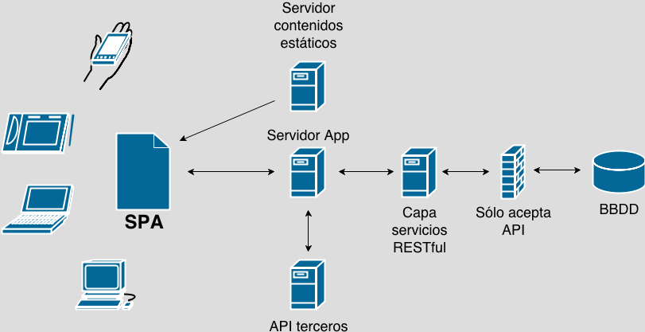

Single Page Application
Una SPA o Aplicación de una Sola Página es una web que todo su contenido carga una sola vez, es decir, tu navegador descarga un sólo archivo html con todos los recursos y dependencias que necesite para funcionar: estilos, scripts, imágenes, fuentes, etc.
Una vez que carga todo el contenido de la aplicación la navegación de esta suele ser muy rápida y fluida, pues el contenido ya ha sido previamente cargado y sólo estamos intercambiando contenido a través de las interacciones del usuario.
Dependiendo de la complejidad y robustez de la aplicación también podría cargarse contenido de forma dinámica sin la necesidad de recargar la página y sí, como seguramente lo estas pensando esto se hace mediante peticiones asíncronas con AJAX de tal manera que sólo se tiene que cargar el nuevo contenido.
Rutas en una SPA
En una SPA tenemos vistas, NO páginas. Las vistas son las diferentes secciones o apartados de contenido que tiene la aplicación y al no tener que cambiar de ruta para acceder al contenido, la carga suele ser muy rápida.
¿Entonces si el contenido se carga en una sóla página, la url no cambia?
Por funcionalidad quizas NO sería necesario que cambiáse la url, pero por usabilidad es una muy buena opción que SI cambie, ya que el navegador va guardando en su historial todas las páginas (en este caso todas las vistas) que el usuario va visitando, lo que podría permitir al usuario regresar o adelantar vistas a través de los botones de atrás y adelante de su navegador web.
También piensa en la posibilidad que existe de que el usuario en vez de navegar por la aplicación para llegar a un contenido en particular, decida acceder a este a través de una url que decida escribir manualmente en la barra de dirección de su navegador web, si no implementas un sistema de rutas esto podría ser un gran problema de accesibilidad en el contenido de tu SPA.
Pero si el contenido se carga en una sóla página, ¿cómo cambiamos la url?
Gracias al uso del hash de la url y el paso de parámetros en la misma 😉🤓😎.
¿Y el SEO en una SPA?
Si bien, acabamos de explicar que podemos cambiar la url mediante el paso de parámetros y el hash de la misma, es un hecho que este tipo de cambios en la url no es muy amigable y como tal siempre hacemos referencia al mismo archivo que carga toda la aplicación.
Además hay que considerar que la mayoria del contenido de una SPA se carga de forma dinámica, por lo que los mecanismos que tienen los buscadores para analizar el código HTML de las urls prácticamente son inservibles, pues en su mayoría, las SPAs tienen un sólo tag HTML vacío con un nombre de identificador y mediante JavaScript, el contenido es cargado asíncronamente a dicho tag.
Por lo anterior el código HTML de nuestra SPA estaría vacío ante los rastreadores de los buscadores, encargados de posicionar el contenido en la web.
Pero no te preocupes 😬 no todo esta perdido, si bien las SPAs no son tan amigables con el SEO, lo cierto es que en los últimos años los mismos buscadores han implementado mecanismos en sus rastreadores para detectar el código HTML generado por una SPA.
Adicionalmente tenemos 2 técnicas para volver más SEO friendly a nuestras SPAs:
- Los Generadores de Sitios Estáticos (SSG - Static Site Generators) y
- El Renderizado del Lado del Servidor (SSR - Server Side Rendering).
Pero de estas dos estrategias hablaré en otra ocasión.
¿En qué se programa una SPA?
Las SPAs se desarrollan en JavaScript, como son aplicaciones web 100% hechas con código frontend, es el único lenguaje en el que se pueden programar. También necesitaremos HTML para el marcado del contenido y CSS para su presentación.
Pero si el código de una SPA es 100% frontend ¿qué pasa con el código backend que proporciona los datos?
El código backend que provee los datos a una SPA, es 100% independiente de esta. De hecho a la SPA le importa poco en qué lenguaje este programado su backend o que reglas, patrones, estructuras o técnicas use internamente, mientras este le proporcione los datos en una API expuesta generalmente en formato JSON es todo lo que la SPA necesita de un backend.
Con lo anterior expuesto, significa que si decides desarrollar un proyecto bajo el paradigma de las SPAs puedes programar de forma independiente el frontend del backend y sólo conectarlos a través de la API que los comuniqué entre sí.
De esta forma puedes mantener mayor control e independencia de desarrollo entre cada una de las partes de código (frontend y backend) de todo tu proyecto.
De hecho en los últimos años el paradigma de desarrollo de las SPAs le ha ido ganando terreno al patrón de desarrollo MVC (Modelo - Vista - Controlador) que fue muy popular en los inicios de la web, en este paradigma el frontend y backend estan mezclados y con mucha dependencia entre sí, además quien llevaba la mayor responsabilidad era el backend y generalmente con cada nueva acción en la aplicación implicaba volver a solicitar los datos al servidor lo que implicaba una recarga al navegador, y por ende una nueva petición por cada acción ejecutada.
Con la llegada de AJAX el tema de las recargas al servidor se solucionó, sin embargo la codependencia y mezcla entre código frontend y backend sigue ocurriendo en el paradigma MVC.
Actualmente con el avance que ha tenido JavaScript como lenguaje y la proliferación de librerías y frameworks que se basan en él, sumado a las nuevas formas de almacenar y consumir información en la web como el cómputo en la nube y el desarrollo de microservicios en la misma; el paradigma de las SPAs cada vez gana mayor aceptación frente al MVC, gracias a que permite desarrollar de forma autónoma e independiente cada parte de código de nuestra aplicación: frontend, backend y persistencia de datos desacoplados y descentralizados de sí mismos.
Librerías y Frameworks para SPAs
Desde el 2010 con el surgimiento de proyectos como Angular.js, Backbone.js y Ember.js que comenzaban a tratar de darle más protagonismo al desarrollo frontend más allá de la simple manipulación del DOM que nos ofrecía en su momento jQuery, comenzó el camino de la arquitectura basada en SPAs, podemos considerar a estas herramientas la primera generación de librerías y frameworks SPAs.
Posteriormente y a partir del 2013 con el surgimiento de herramientas como React, Angular, Polymer, Vue y Svelte que integran nuevos conceptos al ecosistema frontend como: el desarrollo basado en componentes, el manejo del estado, la reactividad, entre otros podemos considerar a estos proyectos como la segunda generación de librerías y frameworks SPAs.
Así que como puedes ver, tienes una gran variedad de opciones a escoger.

Creando una SPA
A continuación encontrarás una lista de videos donde te enseño a desarrollar una SPA desde cero con Vanilla JavaScript, es decir, sin usar frameworks o librerías externas, la programaremos únicamente con todo el poder que nos brinda nuestro querido y poderoso lenguaje de programación: JavaScript 🤗💛.
- Introducción a las Single Page Applications.
- Estructura de Proyecto: assets, helpers y components.
- Helper de conexión a API REST.
- Helper de peticiones AJAX.
- Primeros Componentes de UI.
- Componente Header.
- Renderizado Dinámico.
- Enrutamiento: Router de la App.
- Refactorización de la App. Enrutamiento Asíncrono.
- Vista de Post Actual.
- Buscador Interno de la App.
- Vista de la Búsqueda Actual.
- Infinite Scroll & High Order Components.
- Styled Components & Single File Components.